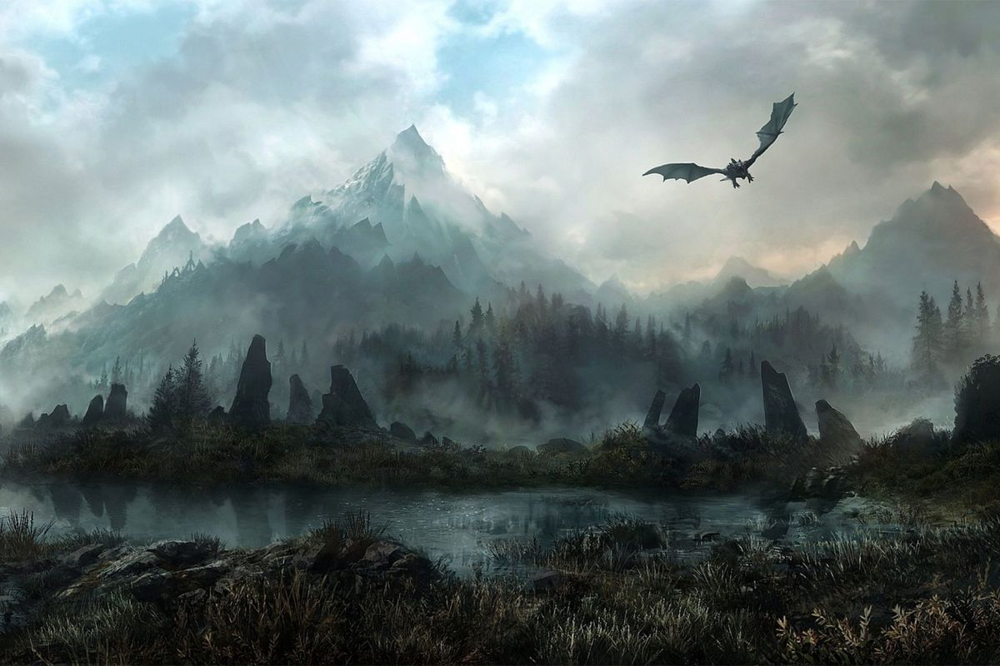
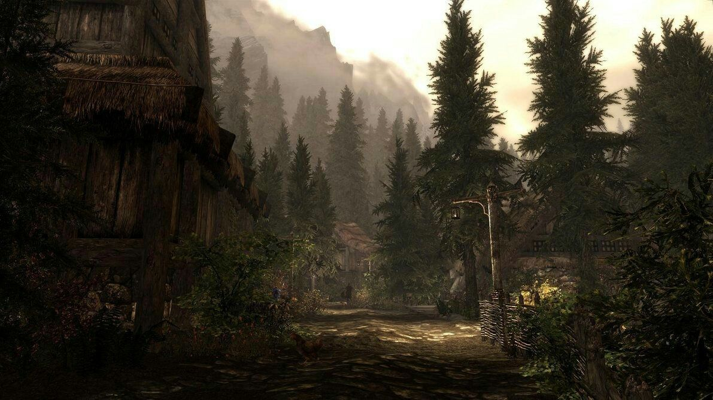
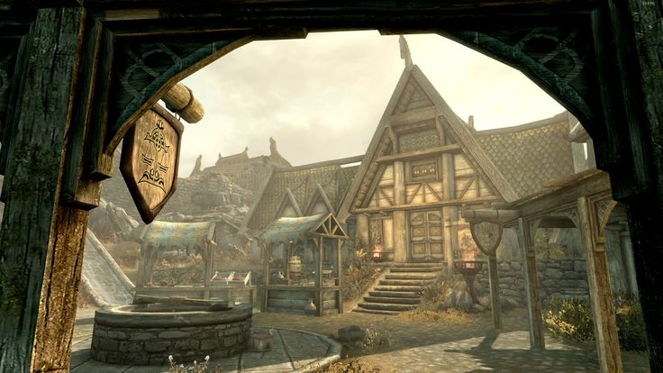

The Realm of Skyrim
From the frozen peaks of the Throat of the World to the dense pine forests of Falkreath, Skyrim is a land of breathtaking beauty and ancient danger.



Register Your Adventurer
Explore the Races of Tamriel
Each of the races of Tamriel brings unique strengths to your adventure. Choose wisely — your heritage shapes your destiny.
Classic Playstyles
Whether you prefer stealth, sorcery, or brute strength, Skyrim has a path for every adventurer. Click a playstyle below to learn more.
The Thief
The Thief lives in the shadows, striking from darkness and vanishing before the enemy knows what hit them. Mastering Sneak, Pickpocket, and Lockpicking, a skilled thief can loot an entire dungeon without drawing a single sword. The Thieves Guild of Riften is always looking for talented new recruits with light fingers and even lighter footsteps.
The Mage
The Mage commands the raw forces of nature — fire, frost, and lightning — through years of dedicated study at the College of Winterhold. Where a warrior relies on muscle and a thief relies on cunning, the Mage relies on knowledge. With the right spells and enough magicka, no dungeon wall can stop you and no enemy can withstand the fury of the arcane.
The Warrior
The Warrior charges headlong into battle, relying on heavy armor, a trusty shield, and the strength of their sword arm to see them through. Champions of the Companions of Whiterun, warriors are respected across Skyrim for their courage and their power. If you prefer to look your enemies in the eye before cutting them down, the Warrior path is yours.